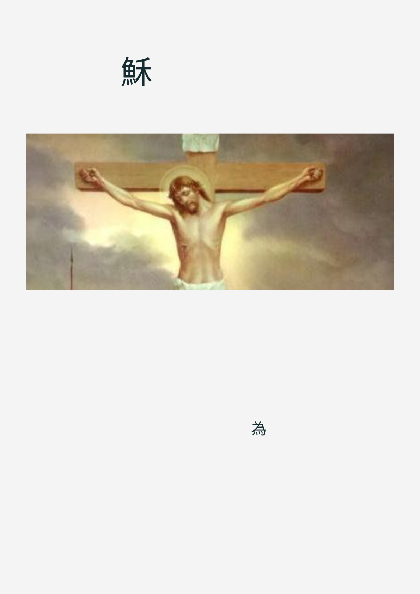
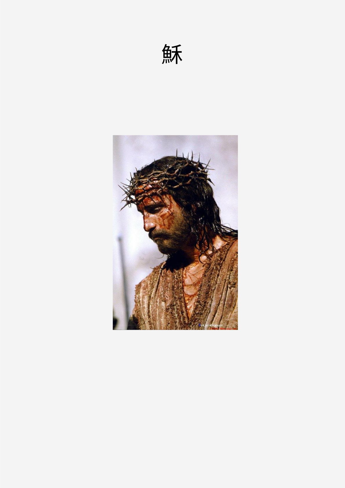
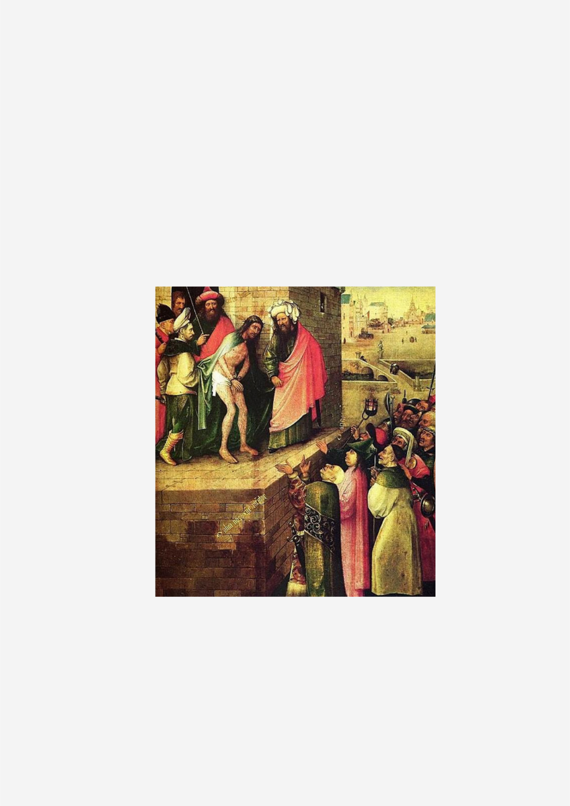
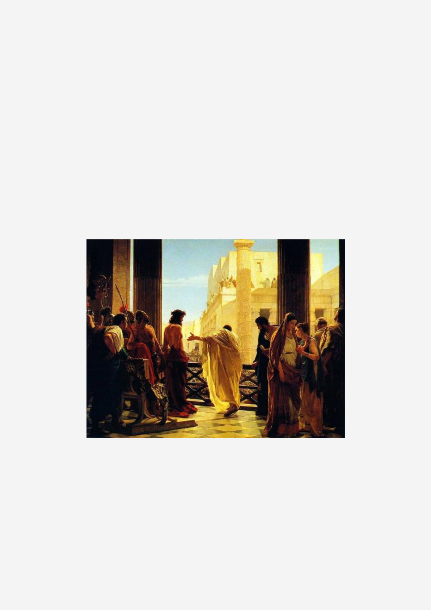
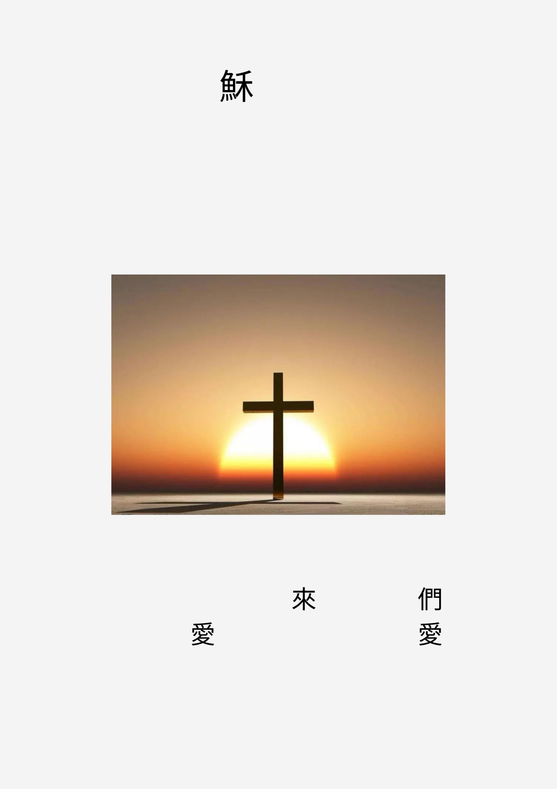
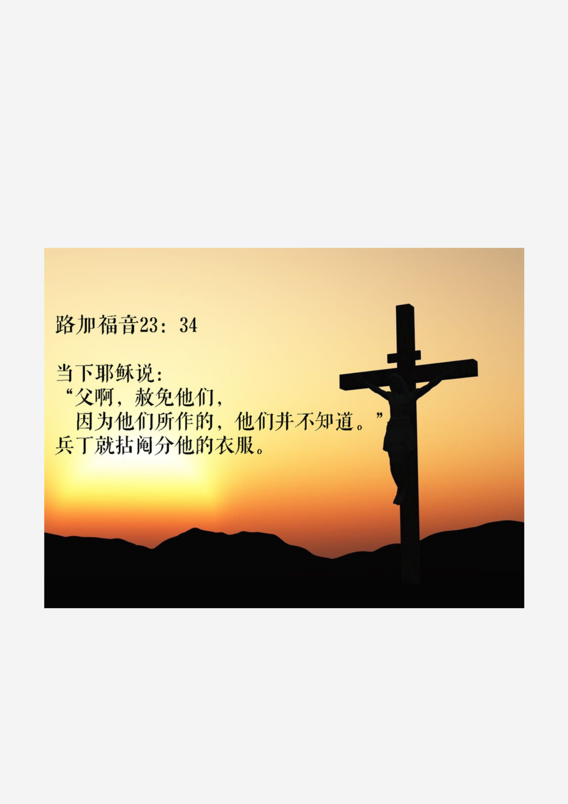

耶
受
难
日
聚
会
2
0
2
1
.
4
.
2
人
数
：
4
0
诗
歌
：
主
我
高
举
你
的
名
，
十
架
是
荣
耀
无
价
之
宝
，
我
怎
能
不
主
活
讲
员
：
唐
姐
敬
拜
主
领
：
全
全
记
录
：
宥
均
排
版
：
S
T
E
V
E
N
经
文
图
片
：
爱
宝

一 耶
被捕
耶稣基督的名为什么那么有能力？
就是由于完全了救恩。魔鬼只怕耶稣基督的
宝血，人没有那力量，因为只有耶稣无罪的宝
血才能做献祭的赎罪，因此神差派了他唯一的
独生子，来为我们赎罪，在被钉十字架时，父
是将祂看作完完全全的大罪人
[他们回答说：“找拿撒勒人耶稣。”耶稣说：“我就
是。”卖他的犹大也同他们站在那里。 耶稣一说“我就
是”，他们就退后倒在地上。]

二 大祭司盘问
[祭司就以耶稣的门徒和他的教训盘问他。耶稣回答说：“我从来是明明地对
世人说话，我常在会堂和殿里，就是犹太人聚集的地方教训人；我在暗地里并
没有说什么。 你为什么问我呢？可以问那听见的人，我对他们说的是什么；
我所说的，他们都知道。”]
耶稣说的话从来都是光明正大，但犹太人的祭司不
正直，他们拿着从神而来的权柄，迫害神的儿子，
若是他们一心向神，是有机会与神同工的，只可惜
他们心里只有权利。
*这使得耶稣最后是遭自己同族的自家人迫害

三 彼拉多审判
[彼拉多就出来，到他们那里，说：“你们告这人是
为什么事呢？”他们回答说：“这人若不是作恶的，
我们就不把他交给你。”彼拉多说：“你们自己带他
去，按着你们的律法审问他吧！”犹太人说：“我们
没有杀人的权柄。”]
*真理是什么？真理是不可辩论的，真理是耶稣的道
但彼拉多站在自己的立场上，不想让自
己所治理的地区发生暴动，所以他必须
讨好犹太人，满足犹太人的要求

四 耶
被钉十字架
[耶稣尝了那醋，就说：“成了！”，便低下
头，将灵魂交付神了。]
神差派他的独生子下
洗洁净我
的罪
孽，是他先
我们。我们怎能不
他？
耶稣为洗净我们的罪流出他的宝
血，所以我们怎能不为主活？

五 本周经文